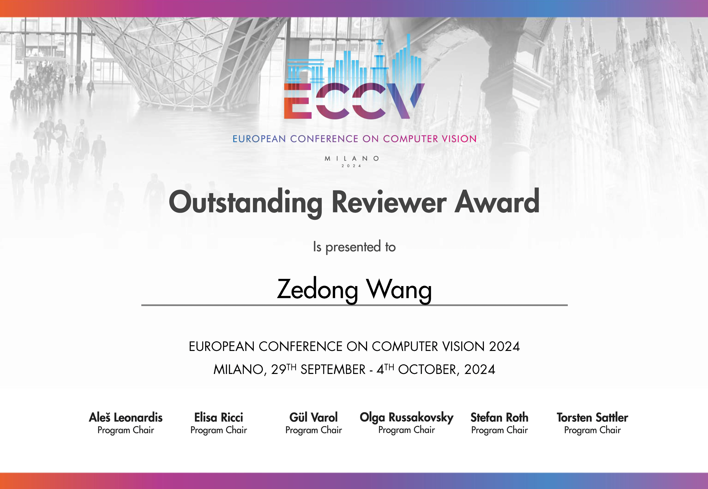

|
Zedong Wang (王澤棟; 王泽栋; Jacky) |
News
- [2024.11.04] I am recognized as an Outstanding Reviewer for BMVC 2024 (rate: 19.3%, 166/860). Happy to contribute to the community! Huge thanks to the BMVC organizers for their dedication.
- [2024.11.04] I am recognized as an Outstanding Reviewer for ACM MM 2024 (rate: 139/X). Happy to contribute to the community! Huge thanks to the ACM MM organizers for their dedication.
- [2024.11.04] I am invited to serve as a Reviewer for CVPR 2025, which will be held in Nashville TN, USA.
- [2024.10.10] One paper on vision backbones & optimizers, BOCB, is released. Welcome to visit the HF and Project page for further discussion! Happy to explore something interesting together with Juanxi Tian and Siyuan Li!
- [2024.09.24] I am recognized as an Outstanding Reviewer for ECCV 2024 (rate: 2.7%, 198/7293). Happy to contribute to the community! Huge thanks to the ECCV organizers for their dedication.
- [2024.08.15] I am invited to serve as a Reviewer for ICLR 2025, which will be held in Singapore.
- [2024.07.20] I am invited to serve as Program Committee Member for AAAI 2025, which will be held in Philadelphia, USA.
- [2024.07.14] Maintain an open-source repository on optimizers, Awesome-Optimizers, with Juanxi Tian and Siyuan Li.
- [2024.06.04] I am invited to serve as a Reviewer for NeurIPS 2024 (Datasets and Benchmarks Track).
- [2024.05.02] One paper on AI4Science (genomics), VQDNA, is accepted at ICML 2024.
- [2024.05.02] Co-authored paper on long sequence modeling, CHELA, is accepted at ICML 2024. Congrats to Zicheng Liu!
- [2024.05.01] I am invited to serve as a Reviewer for BMVC 2024, which will be held in Glasgow, UK.
- [2024.04.16] Co-authored paper on long sequence modeling, LongVQ, is accepted at IJCAI 2024. Congrats to Zicheng Liu!
- [2024.04.13] I am invited to serve as a Reviewer for ACM MM 2024, which will be held in Melbourne, Australia.
- [2024.03.12] I am invited to serve as a Reviewer for ECCV 2024, which will be held in MiCo Milano, Italy.
- [2024.01.22] I am invited to serve as a Reviewer for ICML 2024, which will be held in Vienna, Austria.
- [2024.01.17] I am invited to serve as a Reviewer for ICPR 2024, which will be held in Kolkata, India.
- [2024.01.16] One paper on vision backbone, MogaNet, is accepted at ICLR 2024. Code & weights (180 stars) are released!
- [2024.01.16] Co-authored paper on semi-sup learning, SemiReward, is accepted at ICLR 2024. Congrats to Siyuan Li!
- [2024.01.09] I am invited to serve as an emergency reviewer for ICLR 2024 (TinyPapers). It will be held in Vienna, Austria.
- [2023.12.31] Co-authored preprint on self-supervised learning, Masked Modeling on Vision and Beyond.
- [2023.09.31] Co-authored paper on video prediction, OpenSTL, is accepted at NeurIPS 2023. Congrats to Cheng Tan!
- [2023.06.25] Got my B.Eng. degree from Huazhong University of Science and Technology (HUST)! Special thanks to my undergraduate supervisor Prof. Xinggang Wang for the generous support!
- [2023.05.23] One preprint on data augmentation, SAMix, is presented for both SL & SSL scenarios.
- [2022.11.07] One preprint on vision backbone, MogaNet. A new family of pure convolutional architecture covering 5M~100M+ model scales with great performance. Code & weights are released (180 stars). Welcome to discuss, use, and star!
- [2022.09.11] One preprint on data augmentation, OpenMixup, is presented for vision tasks. This is also my first arXiv paper!
- [2022.09.11] Maintain an open-source repository, OpenMixup (618 stars), for both supervised, semi- and self-supervised visual representation learning based on PyTorch. On updating!
- [2022.07.06] Fortunate to become visiting student at Westlake University, under the supervision of Chair Prof. Stan Z. Li.
- [2021.09.01] Fortunate to become research intern in HUST Vision Lab, under the supervision of Prof. Xinggang Wang.
- [2021.06.01] Fortunate to become research intern in SIAT-MMLab at Shenzhen Institute of Advanced Technology, CAS.
Research Interests
Currently, I focus mostly on Multi-Task Learning and Multi-modal Learning, including (but not limited to):- Label-Efficient Learning: Mixup Augmentation [OpenMixup, SAMix], Semi-supervised Learning [SemiReward].
- Neural Network Architectures: Vision Backbones [MogaNet], Efficient Multi-Task Architectures.
- Optimization & Regularization: Deep Learning Optimizers [SEMA, BOCB], Multi-Task Optimization.
- Downstream Applications: AI4Science [VQDNA], Autonomous Driving.
Education
 Huazhong University of Science and Technology (2019-2023)
Huazhong University of Science and Technology (2019-2023)
• B.Eng. in Electronic and Information Engineering.
• Thesis: Efficient ConvNet-based Vision Backbone (92/100, with full score on NOVELTY term).
• Advisor: Prof. Xinggang Wang.
Research Experience
 ZEEKR Intelligent Technology, Geely (2024.04-present)
ZEEKR Intelligent Technology, Geely (2024.04-present)
• Topics: Multi-Task Learning in Autonomous Driving.
• Advisor: Prof. Dan Xu (University-Enterprise Cooperation).
Dan Xu's Vision Group, CSE, HKUST (2024.03-present)
• Topics: Efficient Multi-Task Learning.
• Advisor: Prof. Dan Xu.
Stan Z. Li's AI Lab, Westlake University (2022.06-present)
• Topics: Representation Learning and AI for Life Science (Genomics).
• Advisor: Chair Prof. Stan Z. Li (IEEE Fellow, IAPR Fellow).
 Xinggang Wang's Vision Group, HUST (2021.09-2022.06)
Xinggang Wang's Vision Group, HUST (2021.09-2022.06)
• Topics: Computer Vision and Few-shot Semantic Segmentation.
• Advisor: Prof. Xinggang Wang.
 SIAT-MMLab, Chinese Academy of Sciences (2021.06-2021.09)
SIAT-MMLab, Chinese Academy of Sciences (2021.06-2021.09)
• Topics: Semantic Segmentation and Text Spotting.
• Advisor: Dr. Bin Fu.
Publications
Selected Preprints (*: Equal Contribution. †: Corresponding Author.):
 |
[NEW!] Unveiling the Backbone-Optimizer Coupling Bias in Visual Representation Learning |
 |
Switch EMA: A Free Lunch for Better Flatness and Sharpness |
 |
Masked Modeling for Self-supervised Representation Learning on Vision and Beyond |
 |
OpenMixup: A Comprehensive Mixup Benchmark for Visual Classification |
 |
Boosting Discriminative Visual Representation Learning with Scenario-Agnostic Mixup |
Conferences (As First Author):
 |
VQDNA: Unleashing the Power of Vector Quantization for Multi-Species Genomic Sequence Modeling |
 |
MogaNet: Multi-order Gated Aggregation Network |
Conferences (As Co-author):
 |
Short-Long Convolutions Help Hardware-Efficient Linear Attention to Focus on Long Sequences |
 |
LongVQ: Long Sequence Modeling with Vector Quantization on Structured Memory |
 |
SemiReward: A General Reward Model for Semi-supervised Learning |
 |
OpenSTL: A Comprehensive Benchmark of Spatio-Temporal Predictive Learning |
Professional Services
Program Committee Member / Reviewer:
- IEEE/CVF Conference on Computer Vision and Pattern Recognition (CVPR), 2025
- International Conference on Learning Representations (ICLR), 2024 (TinyPapers), 2025
- International Conference on Machine Learning (ICML), 2024
- European Conference on Computer Vision (ECCV), 2024
- Conference on Neural Information Processing Systems (NeurIPS), 2024 (D&B Track)
- AAAI Conference on Artificial Intelligence (AAAI), 2025
- ACM International Conference on Multimedia (ACM MM), 2024
- BMVA The British Machine Vision Conference (BMVC), 2024
- IAPR International Conference on Pattern Recognition (ICPR), 2024
Membership:
- China Computer Federation (CCF), Student Member, 2024-2026
- China Society of Image and Graphics (CSIG), Student Member, 2023
Selected Awards and Honors
2024:- Outstanding Reviewer (rate: 2.7%, 198/7293), awarded by The 18th European Conference on Computer Vision (ECCV 2024).
- Outstanding Reviewer (rate: 139/X), awarded by ACM International Conference on Multimedia 2024 (ACM MM 2024).
- Outstanding Reviewer (rate: 19.3%, 166/860), awarded by The 35th British Machine Vision Conference (BMVC 2024).

Acknowledgement
My research career cannot be possible without the generous support from all my awesome mentors, collaborators, and friends:- Prof. Xinggang Wang, Prof. Yu Zhou, Prof. Xin Yang at Huazhong University of Science and Technology (HUST).
- Chair Prof. Stan Z. Li, Dr. Siyuan Li, Dr. Zicheng Liu, Dr. Haitao Lin, Dr. Jiangbin Zheng, Mr. Siqi Ma at Westlake University.
- Prof. Dan Xu, Dr. Zhenxing Mi, Dr. Yuxin Wang, Dr. Yu Cai, Mr. Yiwei Chen at The Hong Kong University of Science & Technology.
- Dr. Bin Fu, Mr. Aozhong Zhang at SIAT-MMLab, Shenzhen Institute of Advanced Technology, Chinese Academy of Sciences.
- Dr. Xiaoping Du at Institute of Remote Sensing and Digital Earth, Chinese Academy of Sciences.
- Mr. Juanxi Tian at Hong Kong Baptist University.
Fragments of Memories
Great memories with my advisors: Prof. Xinggang Wang (HUST), Chair Prof. Stan Z. Li (Westlake University), and also CAIRI AI Lab.